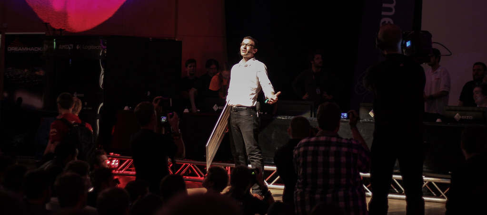

The editors behind your next upload
Cutsway edits gaming videos, streams, shorts and podcasts for creators, at the speed a channel actually needs.
Issue 04
In this issue
Change it. The contents are written from what you send.
Forty-eight hours inside one edit

The files land on a Friday night: a six-hour session, a facecam, a separate mic track. By Saturday morning the dead air is gone and the story has a shape. By Sunday evening it is a video, three thumbnails and ten shorts, posted to a schedule.
"Your editor watches your last ten uploads before cutting the next one."
Notes come back on the exact frame. Two rounds are included, and the same editor stays with the channel from one upload to the next.


Letters to the editor
What should I send?
Everything raw. Choosing is what we're for.
Will it still feel like me?
That is the first thing your editor learns, from your own uploads.
How fast, honestly?
Thumbnails in 8 hours, shorts in 24, videos in 48, podcasts in 72. Samples, confirmed on your call.
Do you post as well?
Titles, descriptions and a schedule on YouTube, TikTok, Instagram and X.
How many revisions?
Two rounds per edit, as notes on the frame.
Can we start this week?
Book a call. Most channels send their first files within days.